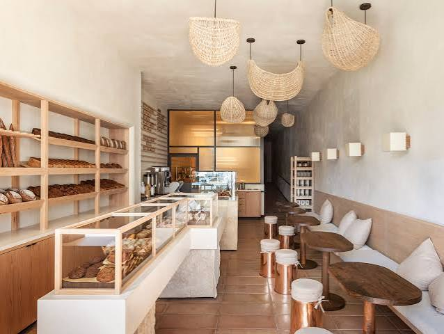

Our Story
Founded in 2015 by John Smith, The Artisan Bakery started as a small neighbourhood oven and has grown into a beloved local institution. We believe in using only the finest ingredients – organic flour, free‑range eggs, and real butter – to create bread and pastries that nourish both body and soul.
Every loaf is hand‑shaped and baked in a stone‑deck oven, giving it that distinctive crust and airy crumb. Our team of skilled bakers works through the night to ensure you get the freshest goods every morning.
Beyond baking, we are committed to sustainability: we source locally, reduce food waste, and use eco‑friendly packaging.
